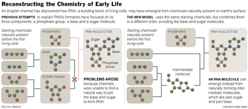
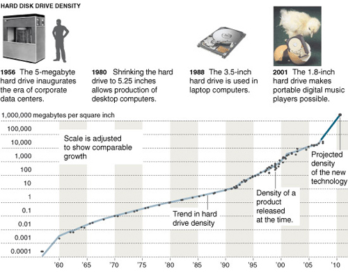
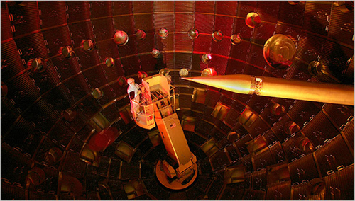
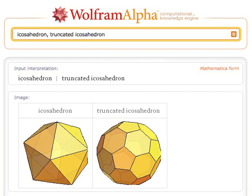

Welcome to Vol. 10 No. 6 of Design Science News, the e-bulletin of the Buckminster Fuller Institute
Design Science News brings you important updates about BFI’s programs and activities as well as news from around the world related to humanity’s option for success and comprehensive design science.Last chance to RSVP for the Buckminster Fuller Challenge Conferring Ceremony and Reception!
Join us for the Buckminster Fuller Challenge Conferring Ceremony on June 6th, 2009 at the Museum of Contemporary Art in Chicago to celebrate the winning proposal by the Smart Cities Group at the MIT Media Lab: Sustainable Personal Mobility and Mobility-on-Demand Systems.June 6th:11:00am:
Starting With the Universe Gallery Talk, Unwavering Principles with Christine Tarkowski and Nance Klehm
Museum of Contemporary Art, 220 East Chicago Ave., Chicago, IL2:00 - 4:30pm:
2009 Buckminster Fuller Challenge prize conferring ceremony
Presentation by winner and panel discussion with jurors
Museum of Contemporary Art, 220 East Chicago Ave., Chicago, IL
RSVP + $20 suggested donation, this event 5:00 - 8:00pm:
Reception and celebration
Presentation by Bruce Mau and installation of Fuller's iconic Fly's Eye Dome
Merchandise Mart, South Lobby, 222 Merchandise Mart Plaza, Chicago, IL
RSVP + $20 suggested donation, this event
To RSVP for these events and donate at the door please call or email:
718 290 9280 / will (at) bfi (dot) org
See you in Chicago!
Follow BFI's work on Facebook and Twitter!
Keep up to date on all of our programs and events by connecting with us today!
» BFI on Facebook
» Challenge on Facebook
» BFI on Twitter
Buckminster Fuller: Starting With the Universe at the Museum of Contemporary Art, Chicago Extended Until July 5th!
If you haven't yet had an opportunity to see this fantastic show, you've just been given two additional weeks to check it out! For more details about the show, visit the museum's websiteNew edition of the Raleigh Dymaxion Map now available in our online store
This beautiful, newly printed edition of the Dymaxion map was first designed in Raleigh, North Carolina by Buckminster Fuller and BFI Board member Shoji Sadao. The ocean is colored light gray and the land masses are softly color-coded for mean annual temperatures. It is printed on 34 x 22 inch 80 lb. semi-gloss stock. Includes a two page info-sheet about the Dymaxion map and how it differs from other world maps.
» Find out more about the Dymaxion Map
» Purchase a copy from our online store
» Purchase a laminated or folded version from ODT Maps
TRENDS & PERSPECTIVES
Chemist shows how RNA can be the starting point for life
An English chemist has found the hidden gateway to the RNA world, the chemical milieu from which the first forms of life are thought to have emerged on earth some 3.8 billion years ago.
He has solved a problem that for 20 years has thwarted researchers trying to understand the origin of life - how the building blocks of RNA, called nucleotides, could have spontaneously assembled themselves in the conditions of the primitive earth. The discovery, if correct, should set researchers on the right track to solving many other mysteries about the origin of life. It will also mean that for the first time a plausible explanation exists for how an information-carrying biological molecule could have emerged through natural processes from chemicals on the primitive earth.
The author, John D. Sutherland, a chemist at the University of Manchester, likened his work to a crossword puzzle in which doing the first clues makes the others easier. "Whether we've done one across is an open question," he said. "Our worry is that it may not be right."
Other researchers say they believe he has made a major advance in prebiotic chemistry, the study of the natural chemical reactions that preceded the first living cells. "It is precisely because this work opens up so many new directions for research that it will stand for years as one of the great advances in prebiotic chemistry," Jack Szostak of the Massachusetts General Hospital wrote in a commentary in Nature, where the work is being published on Thursday. (Source: New York Times)
Related:
» Reconstructing the master molecules of life
Racetrack memory: the future third dimension of storage
The world today is very different from that of just a decade ago, thanks to our ability to readily access enormous quantities of information. Tools that we take for granted-social networks, Internet search engines, online maps with point-to-point directions, and online libraries of songs, movies, books and photographs-were unavailable just a few years ago. We owe the arrival of this information age to the rapid development of remarkable technologies in high-speed communications, data processing and—perhaps most important of all but least appreciated-digital data storage.
Each type of data storage has its Achilles' heel, however, which is why computers use several types for different purposes. Most digital data today, such as the information that makes up the Internet, resides in vast farms of magnetic hard disk drives (HDDs) and in the HDDs of individual computers. Yet these drives, with their rotating disks and moving read/write heads, are unreliable and slow. Loss of data because of so-called head crashes occurs relatively often. Regarding speed, it can take up to 10 milliseconds to read the first bit of some requested data. In computers, 10 milliseconds is an eon-a modern processor can perform 20 million operations in that time.
The computing world is thus crying out for a memory chip with high data density that is also cheap, fast, reliable and nonvolatile. With such a memory, computing devices would become much simpler and smaller, more reliable, faster and less energy-consuming. Research groups around the world are investigating several approaches to meet this demand, including systems based on new electronic components called mem-rist-ors and others making use of spintronics, in which the spin, or magnetism, of electrons plays a key role.
The answer may lie in a new kind of spintronic chip called racetrack memory (RM), which I proposed in 2002. RM stores bits of data as magnetized regions on nanowires—the "racetracks." These magnetized regions are as nonvolatile and rewritable as those on an HDD, but the chip needs no moving parts larger than an electron to read and write bits, boosting speed and reliability. The bits themselves zoom along their racetrack, passing a read/write head at a fixed location beside the wire. (Source: Scientific American)
Related:
» Putting electronics in a spin
In hot pursuit of fusion (or folly)
Here in a dry California valley, outside a small town, a cathedral of light is to be dedicated on Friday. Like the cathedrals of antiquity, it is built on an unrivaled scale with unmatched technology, and it embodies a scientific doctrine that, if confirmed, might lift civilization to new heights.
"Bringing Star Power to Earth" reads a giant banner that was recently unfurled across a building the size of a football stadium. The $3.5 billion site is known as the National Ignition Facility, or NIF. For more than half a century, physicists have dreamed of creating tiny stars that would inaugurate an era of bold science and cheap energy, and NIF is meant to kindle that blaze.
In theory, the facility's 192 lasers - made of nearly 60 miles of mirrors and fiber optics, crystals and light amplifiers - will fire as one to pulverize a fleck of hydrogen fuel smaller than a match head. Compressed and heated to temperatures hotter than those of the core of a star, the hydrogen atoms will fuse into helium, releasing bursts of thermonuclear energy.
The project's director, Ed Moses, said that getting to the cusp of ignition (defined as the successful achievement of fusion) had taken some 7,000 workers and 3,000 contractors a dozen years, their labors creating a precision colossus of millions of parts and 60,000 points of control, 30 times as many as on the space shuttle. "It's the cathedral story," Dr. Moses said during a tour. "We put together the best physicists, the best engineers, the best of industry and academia. It's not often you get that opportunity and pull it off." (Source: New York Times)
Related:
» World's largest laser to attempt nuclear fusion
RESOURCES
Wolfram Alpha
"Making the world's knowledge computable"
Wolfram|Alpha's long-term goal is to make all systematic knowledge immediately computable and accessible to everyone. We aim to collect and curate all objective data; implement every known model, method, and algorithm; and make it possible to compute whatever can be computed about anything. Our goal is to build on the achievements of science and other systematizations of knowledge to provide a single source that can be relied on by everyone for definitive answers to factual queries.
EVENTS
Allegra Fuller Snyder, Jay Baldwin, and Others on CBS News Sunday Morning!
CBS News Sunday Morning, the 30 years in running sunday morning network staple, will be airing a piece on Buckminster Fuller this Sunday morning June 7. For the show, veteran CBS reporter Dean Reynolds interviewed Allegra Fuller Snyder and Jay Baldwin, among others, and filmed at the Museum of Contemporary Art in Chicago, the site of the Fuller exhibition Starting With the Universe. Check local listings for air times in your area!Discovery Channel Imagines a Dome Over Houston
Houston is in peril. The country's fourth most populous city faces heat, hurricanes, and other natural disasters. Only a radical engineering solution will save the city: a massive dome, 1,500 feet high and a mile in diameter!
This is the introduction to the premiere episode of the Discovery Channel's 'Mega Engineering,' airing Monday, June 8th at 8:00pm Eastern. BFI Board member Shjoi Sadao and others will talk about some of Fuller's pioneering ideas for domed cities and the design and engineering principles involved in such a massive endeavor.
Radical Nature: Art and Architecture for a Changing Planet 1969–2009
Barbican Art Gallery
London
June 19 - October 18, 2009
The beauty and wonder of nature have provided inspiration for artists and architects for centuries. Since the 1960s, the increasingly evident degradation of the natural world and the effects of climate change have brought a new urgency to their responses. Radical Nature is the first exhibition to bring together key figures across different generations who have created utopian works and inspiring solutions for our ever-changing planet.
Radical Nature draws on ideas that have emerged out of Land Art, environmental activism, experimental architecture and utopianism. The exhibition is designed as one fantastical landscape, with each piece introducing into the gallery space a dramatic portion of nature. Work by pioneering figures such as the architectural collective Ant Farm and visionary architect Richard Buckminster Fuller, artists Joseph Beuys, Agnes Denes, Hans Haacke and Robert Smithson are shown alongside pieces by a younger generation of practitioners including Heather and Ivan Morison, Philippe Rahm and Simon Starling. Radical Nature also features specially commissioned and restaged historical installations, some of which are located in the outdoor spaces around the Barbican while a satellite project by the architectural collective EXYZT is situated off site.
A fully illustrated catalogue, with a foreword by environmental campaigner and writer Jonathon Porritt, accompanies the exhibition and is available in the Art Gallery Shop on level 3 and online.
To unsubscribe from this newsletter, send email to this address.
To never receive email from The Buckminster Fuller Institute, send email to this address.
This email is sent from:
The Buckminster Fuller Institute
{domain.address}